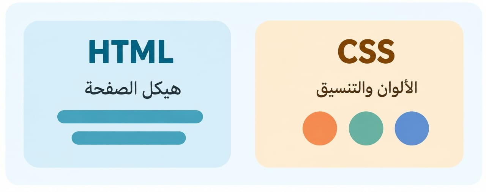

الاسم : ندى عادل على على المغبون
الرقم الجامعى: 2500780 | السكشن:165 | المجموعه : ه
مع اﻟﺘﻄﻮر اﻟﻤﺴﺘﻤﺮ ﻓﻲ ﻋﺎﻟﻢ اﻟﻮﻳﺐ، أﺻﺒﺢ ﺗﺼﻤﻴﻢ اﻟﻤﻮاﻗﻊ ﻻ ﻳﻘﺘﺼﺮ ﻋﻠﻰ ﻛﺘﺎﺑﺔ اﻷﻛﻮاد ﻓﻘﻂ، ﺑﻞ ﻳﺤﺘﺎج إﻟﻰ ﻟﻤﺴﺔ ﺟﻤﺎﻟﻴﺔ وتجربه استخدام مريحه تريح الزوار
من الادوات الأساسيه التى تمنح صفحات الويب المظهر الجذاب والاحترافى ومن خلال تعلم اساسياتها سيتمكن اى مبتدئ من التحكم css وهنا يأتى دور لغه
. فى الالوان والخطوط والخلفيات وترتيب العناصر على الصفحه بطريقه تجعل الموقع أكثر تنظيما ووضوحا
تتميز لغه (css ) بمرونتها وتعدد وظائفها فى تصميم وتنسيق صفحات الويب ومن ومن أهم إستخدامتها :-
تساعد على التحكم فى شكل النصوص مثل إختيار انواع الخط , والحجم , واللون , ممايعطى الموقع مظهرا جذابا ومنظما للمستخدم
. إضافه ألوان وخلفيات متنوعه داخل الصفحه سواء كانت صورا ثابته أو متحركه أو تدرجات وتناسق الالوان مما يضيف لمسه جماليه على صفحه الويب
. تساعد فى جعل الموقع متوافقا مع جميع الاجهزه مثل الهواتف الذكيه والاجهزه اللوحيه
إضافه تأثيرات انتقاليه فى عناصر الصفحه مما يحسن تجربه المستخدم ويجعل الموقع أكثر تفاعلا
"لأنها اللغه التى تجعل صفحات الويب مظهرا أجمل ومرتب وسهله الاستخدام ومن اهم الاساسيات التى يجب معرفتها ( css) للبدأ فى تعلم تصميم المواقع فمن الخطوات الهامه هى تعلم أساسيات لغه "
هى الطريقه التى نخبر بها (css) بالعناصر التى نريد تنسيقهاى, مثل , الفقرات , العناوين ,الازرار .
هى التى تتحكم فى مظهر العنصر ,مثل ,الون وحجم الخط , ونوعه , والمسافات بين العناصر .
لكل خاصيه من الخصائص قيمه معينه تحدد شكلها النهائى مثلا , يمكن أن يكون اللون الاحمر أو الأسود 000000# ويكون حجم الخط 16x
كل عنصر من الصفحه يتم التعامل معه كصندوق يتكون من محتوى , والمساحه الفارغه حول المحتوى (padding). و الحدود (bodar) . والمسافات الخارجيه بينه وبين العناصر الاخرى .( margin)
عند تحديدةالاحجام والمسافات نستخدم وحدات , مثل البكسل px او النسبه المؤويه % للتحكم فى أبعاد العناصر .
'' عند البدأ فى تعلم تصميم المواقع عليك أن تفهم الفرق بين (html)و(css) كل منهم يقوم بعمل مختلف عن الاخر
''| وجه المقارنه | html | css |
|---|---|---|
| الدور الأساسى | هى المسؤوله عن بناء الهيكل لصفحه وتحديد العناصر الموجوده مثل العناوين الفقرات والصور والجداول | المسؤوله عن تنسيق المظهر والشكل مثل الالوان والخطوط والاحجام والمسافات والخلفيات والتأثيرات البصريه |
| الوظيفه | تنظيم محتوى صفحه الويب | جعل الصفحه أكثر جمالا وجاذبيه |
